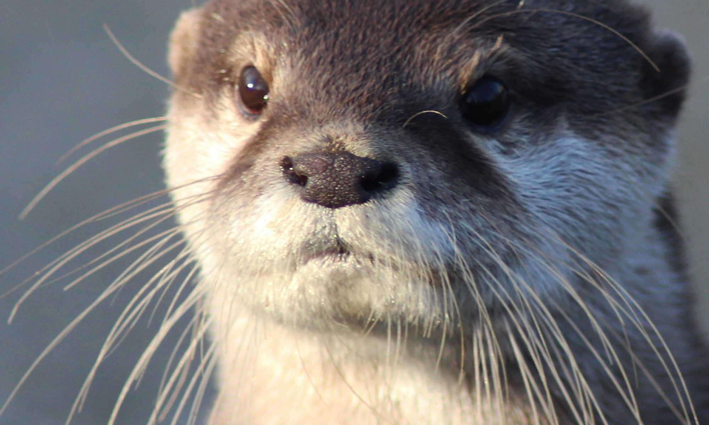

my summer went pretty well I would say. I did summer homework mostly for AP chemistry And I was learning how to code. I learn the basics of HTML, CSS, Javascript, learning the basics with Python, I played a lot of osu mania and work. I like playing tboi and learning about languages. I don’t like disrespectful people, especially people who don't say 'excuse me 'after burping. My dream is to be a marine biologist, especially a mammalogy marine biologist when I get much older and try to get an internship at the shedd aquarium or work there. In english I really like when we have to present something or discuss something in a whole class that I know about like the frankenstein question of should Victor make a partner or a friend.(He should have made a partner)Because I was much more scared to present then I realized that people always say things to you no matter if that is in front of or behind you and no matter if you are right or wrong. So I just let that go of people and thought of myself as a human being and just did the present no matter what. I most likely need some help with grammar that has been my weak point for the longest I have been knowing. And that is me as a person/human being. 